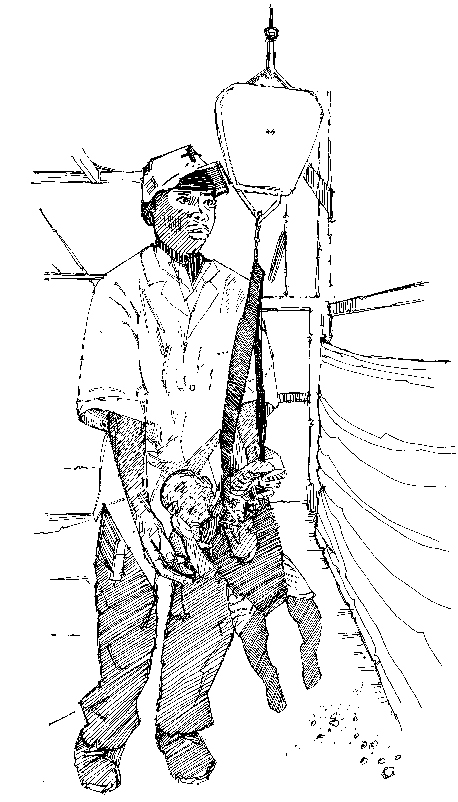
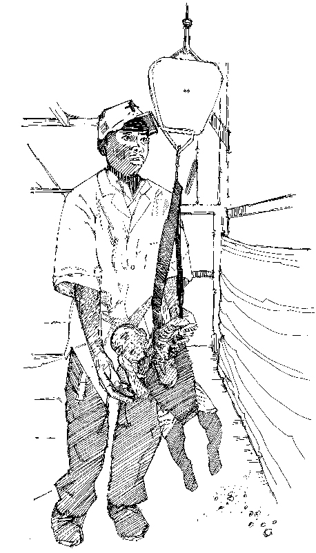

Why is measuring height and weight important?
- Measuring height and weight helps to show whether a child is growing well.
- If measurements show that a child is wasting, thin or swollen, the child may have acute malnutrition and must be referred for nutritional care and treatment.
What you need to know
- It is important to be as accurate as possible when taking measurements.
- Clothes and shoes should be removed when measuring weight. Shoes should be removed when measuring height. To reassure the caregiver, try to measure in private (for instance by using a screen).
- Two people are required to take each measurement (particularly height). If the parent or carer is close by, she or he can reassure the child.
- Measurements should be read aloud clearly and recorded immediately to avoid error.
How to measure height (length)
- Children less than two years old are measured lying down (length). Children more than two years old are measured standing up (height). Height and length mean the same thing: how tall the child is.
- If age is not known, children shorter than 87 cm are measured lying down. If a child less than two years will not lie down, measure standing height and add 0.7 cm to the measurement. If a child older than two years cannot stand, measure length lying down and subtract 0.7 cm from the measurement.
Lying down
- Place the height board flat on the ground or on a table or bench space.
- Remove the child’s shoes and gently place the child on his or her back along the centre of the board.
- Hold the sides of the child’s head, cupping the ears, and (with the help of the assistant or carer) position the head touching the board. The head should be positioned so that the line of sight for the child is perpendicular to the head board.
- Place your hands gently on the child’s ankles or knees to keep them flat and straight. While positioning the child’s legs, place the sliding board against the soles of the child’s feet, which should be at right angles to the board.
- The measurer reads aloud the measurement to the nearest 0.1 cm.
- The measurement should be repeated. A second person records it immediately.
Standing up
- Remove the child’s shoes.
- Place the child standing upright against the centre of the height board.
- Firmly press the child’s ankles and knees against the board (helped by the assistant or carer), ensuring that his or her head is straight and that he or she is looking directly in front.
- The child’s head, shoulders, buttocks and heels should all touch the board.
- The sliding part of the board should rest flat against the top of the head.
- The measurer reads out loud the measurement to the nearest 0.1 cm.
- The measurement should be repeated. A second person records it immediately.
How to measure weight
- Weight may be measured using a Salter-type hanging spring scale (where the child hangs below the scale) or an electronic scale that allows a child to be measured in the parent’s or carer’s arms.
- Equipment should be regularly checked (calibrated) against a known weight (for example, five litres of oil), and always set to zero before use.
- Infants who are younger than six months usually require special baby scales, which are available in hospitals or clinics. Alternatively, they can be measured by the Salter when sitting in a sling.
Using hanging Salter scales
In a health facility, the scale is attached to the ceiling or a stand. In a community, the scale can be hooked to a tree or tripod or suspended from a stick held by two people.
- Attach the weighing pants (or a weighing hammock for smaller infants) to the scale.
- Check the needle is on zero.
- Remove the child’s clothes and shoes.
- Place the child in the weighing pants. Make sure the child is safe by staying close and placing one arm in front of and one arm behind the child to keep him or her balanced.
- Take the reading when the child is calm and the scale needle has stopped moving. The scale should be read at eye level and the value read aloud to the nearest 100 g.
- Repeat the measurement. A second person should record it immediately.
If weighing pants are not available, it is possible to suspend the child in a piece of the mother’s clothing, or in a basin or grass basket. In such cases, make sure the scale is appropriately readjusted to zero.
If (for cultural reasons or because of the climate) it is not possible to remove clothes, an average weight for clothes should be deducted from the measurement.
Using electronic scales
Electronic scales are very precise, whether they are powered by a battery or a solar switch. They are designed to allow the parent or caregiver to hold the child while he or she is weighed.
- Place the scale on a flat surface in a well-lit area.
- Make sure that all four of the scale’s feet are on the ground.
- Remove the child’s clothing.
- Turn the scale on by moving a hand over the solar switch. (An image of an adult indicates the scale is ready to weigh an adult.)
- The parent or caregiver stands on the scale first, without the child. The weight is shown and stored in the scale’s memory. The adult remains on the scale.
- Wave a hand over the solar switch again. The scale indicates that it is ready to weigh an adult with a child. (An image of an adult holding a child is shown.)
- The child to be weighed is passed to the adult on the scale, who remains still.
- The scale shows the child’s weight. Read the measurement aloud; a second person records it immediately.
 

Measuring height and weight of a child